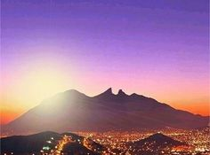
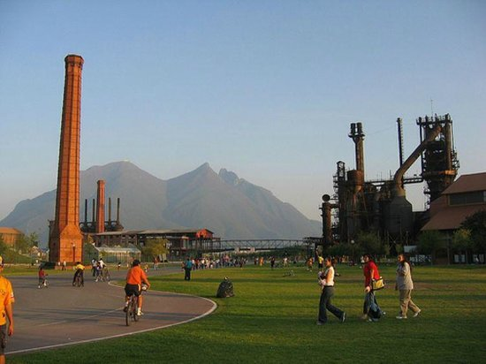
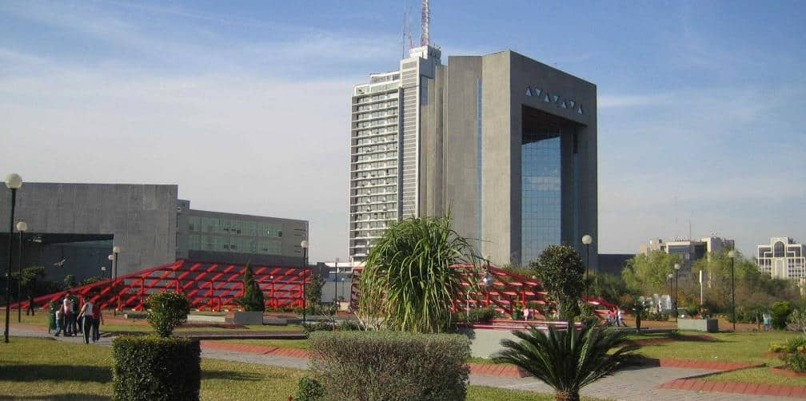
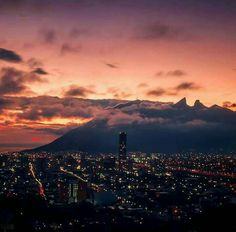
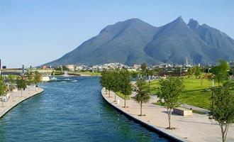
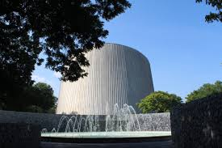
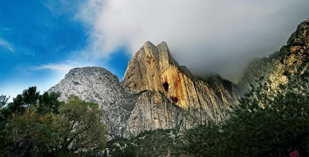
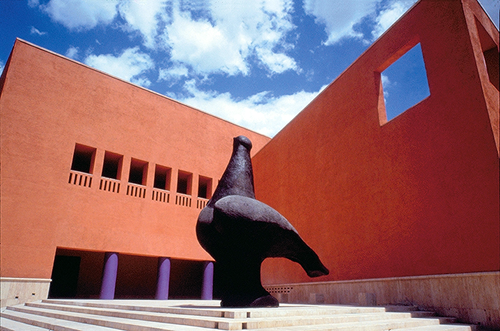
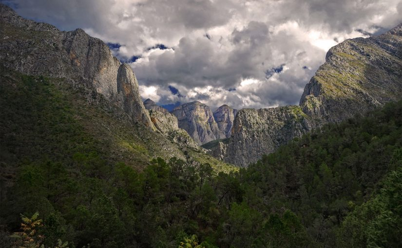

MONTERREY
Capital del Estado Mexicano Nuevo Leon
Monterrey es la capital del estado de Nuevo Leon en el noreste de Mexico,
es un extenso centro industrial y de negocios rodeado de montañas. en lo alto
se encuentra el palacio OBISPADO, una construccion barroca antigua con museo
regional. En el centro de la ciudad se ubica la macroplaza, una amplia zona verde
de plazas conectadas, que alberga el impresionante MUSEO DE ARTE CONTEMPORANEO Y
LA TORRE DE FARO DE COMERCIO, que emite un laser verde hacia el cielo. Aqui tambien
se puede encontrar personas trabajadoras y hospitalarias, asi como lugares turisticos
para visitar.

Lugares turisticos
-
Parque Fundidora
Es un parque publico que se encuentra en los terrenos
que ocupo la compañia Fundidora de fierro y Acero de Monterrey
de 1900 a 1968.

-
Macroplaza
La macroplaza o gran plaza se denomina asi por ser la parte
central de monterrey que ocupa 40 hectareas. es la plaza mas grande
de Mexico y la quinta plaza mas grande del mundo

-
Cerro de la Silla
Es una montaña que forma parte del sistema de estribaciones
de la Sierra Madre Oriental. Se encuentra abarcandom partes
territoriales de los municipios de Guadalupe, Monterrey y Juarez
constituye un icono de la ciudad de Monterrey y un simbolo para
los regiomontanos

-
Paseo Santa Lucia
Es un canal o rio artificial y via peatonal que se encuentra ubicado
en el primer cuadro de la ciudad de Monterrey, N.L. Se inaguro el
15 de septiembre de 2007.

-
Planetario Alfa
Ubicado en el municipio de San Pedro de la zona Metropolitana de Monterrey
es un conjunto de museo observatorio astronomico y sala IMAX Dome. fue inagurado
el 11 de octubre de 1978

-
Parque La Huasteca
Es un parque ecologico ubicado en el Municipio de Santa Catarina N.L
Se encuentra junto al cauce del Rio Santa Catarina.

-
Museo de Arte Contemporaneo
Tambien conocido como MARCO se fundo con la mision
de generar exposiciones y seleccionar proyectos provenientes
de otras instituciones, se enfoca en ofrecer al publico un marco
de referencia respecto al momento actual del arte contemporaneo

-
Parque Nacional Cumbres de Mty
Creado el 24 de Noviembre de 1939. Este parque se
constituyo como tal para la conservacion de la flora y la fauna
del lugar

-
Estado de Oaxaca
-
San Luis Potosi